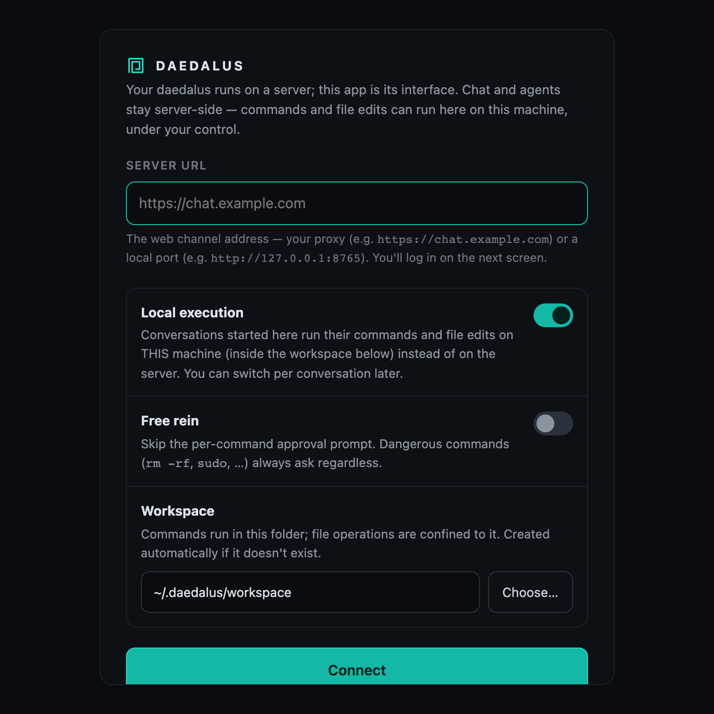
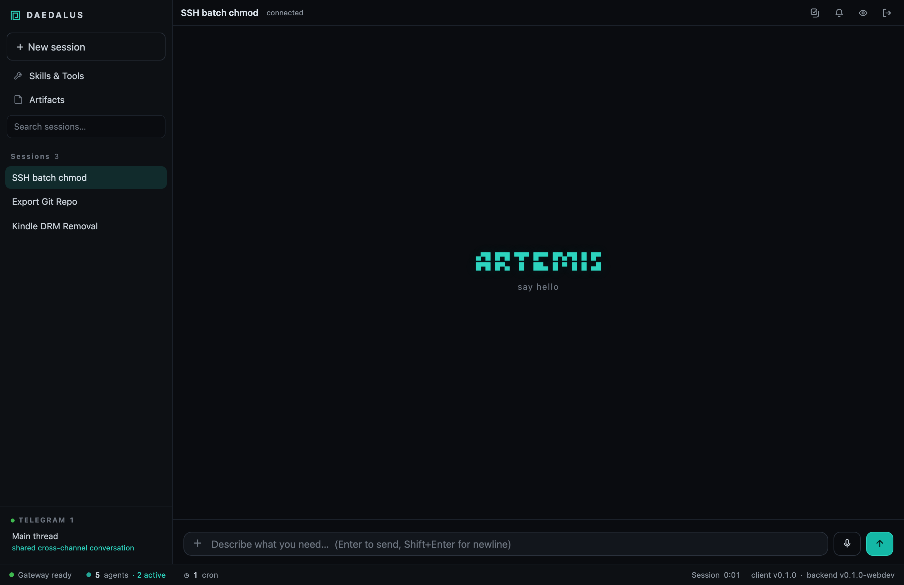
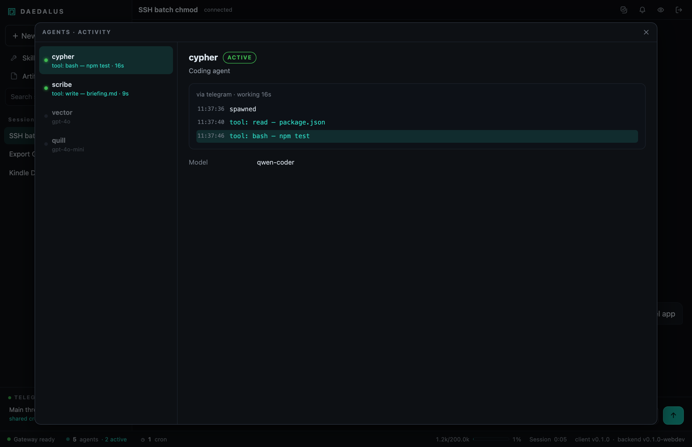
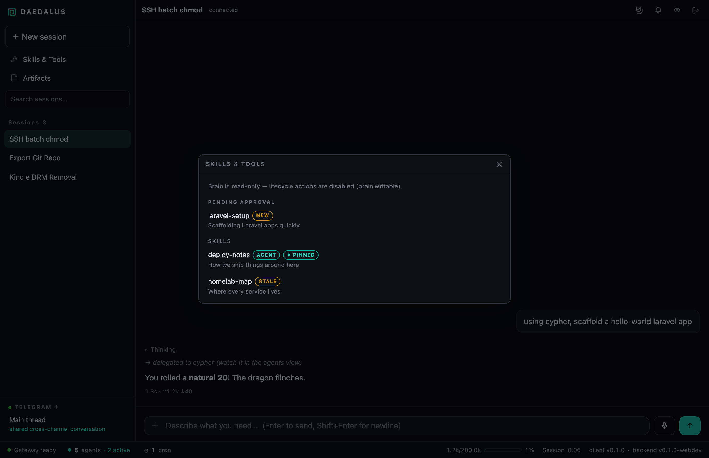
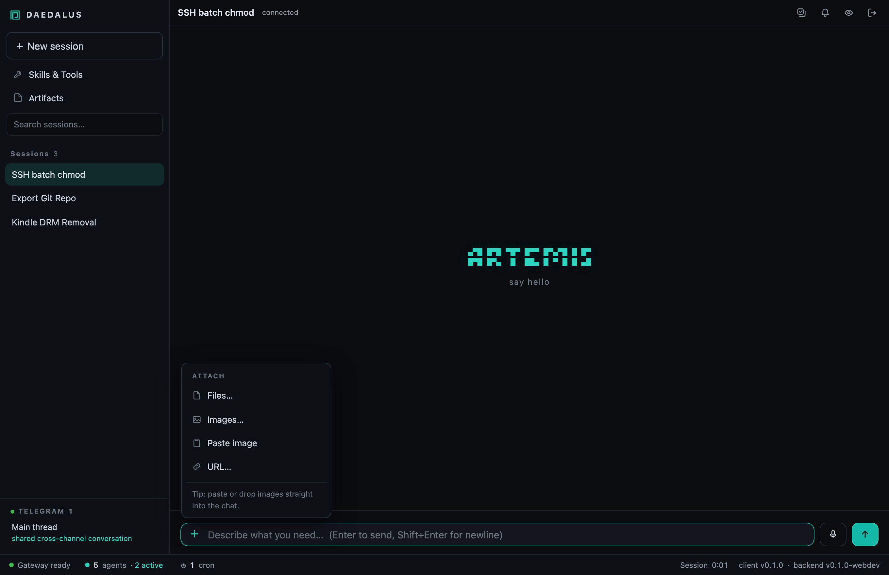
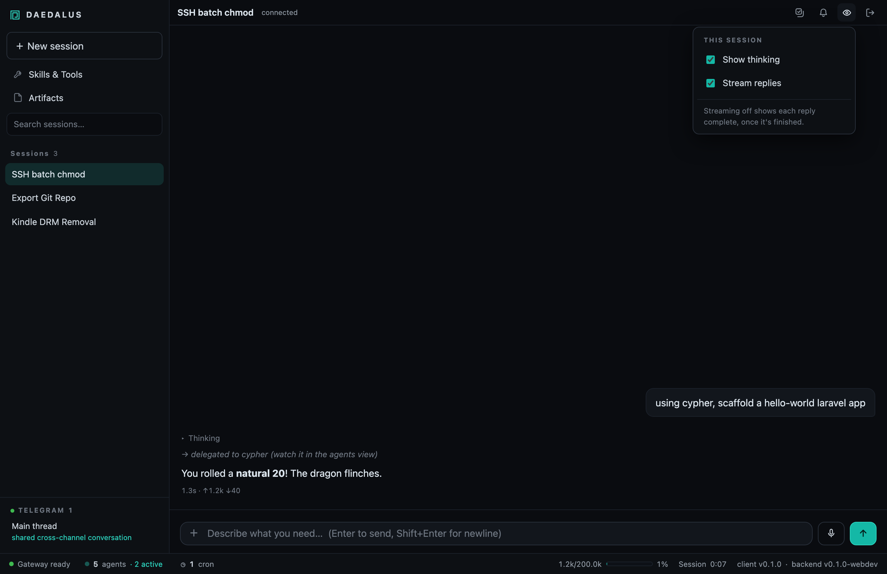
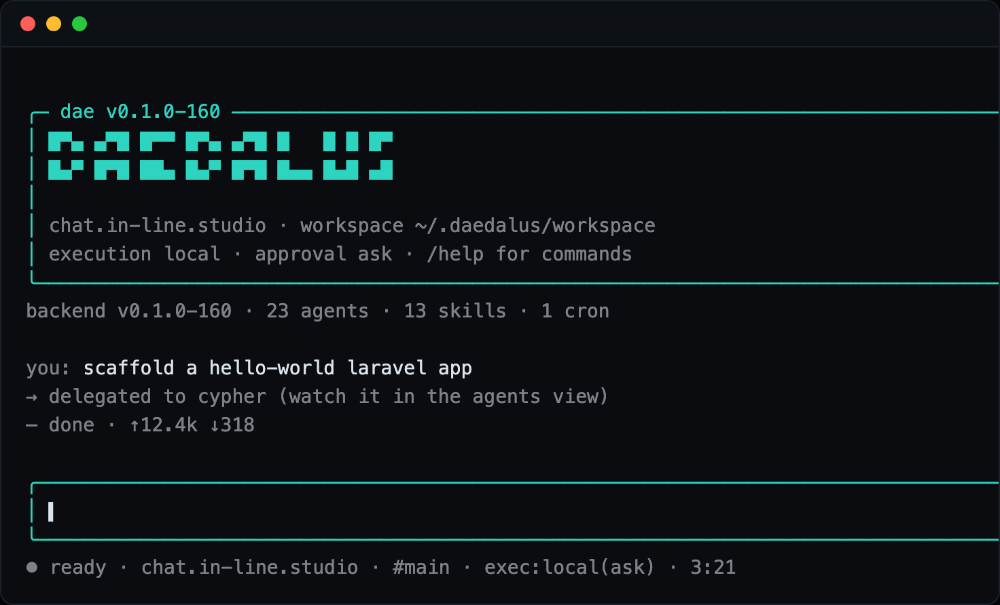
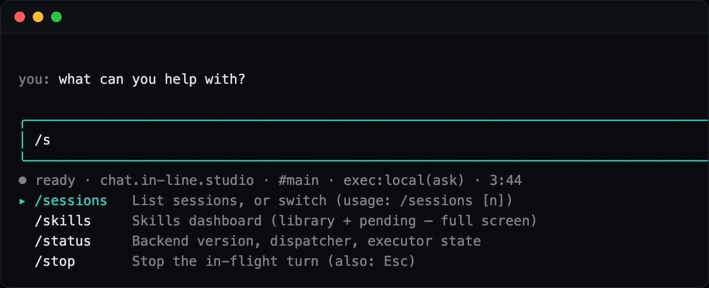
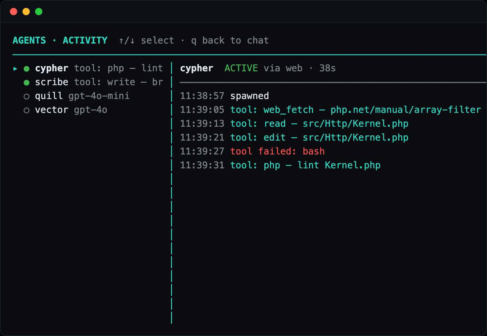

█▀▄ ▄▀█ █▀▀ █▀▄ ▄▀█ █ █ █ █▀ █▄▀ █▀█ ██▄ █▄▀ █▀█ █▄▄ █▄█ ▄█
Daedalus is a self-hosted agent runner. One core holds your agents, skills and memory; lightweight clients — a desktop app, a terminal, Telegram — connect to it, and the work runs on your machines, under your control.
Quick start
Daedalus runs the whole stack in Docker. Install the CLI, scaffold a brain, bring it up — then talk to your agent through whichever client you like.
Both dae and daedalus go on your PATH.
npm install -g https://github.com/inline-studio/daedalus/releases/latest/download/daedalus-latest.tgz dae --version
dae install asks only what it can’t infer (an LLM provider key, optional Telegram / memory / search), then starts the container stack. Re-running is idempotent.
# creates ~/.daedalus/ from the shipped example brain dae init # asks a few skippable questions, then `docker compose up -d --build` dae install
The daedalus container serves everything — you don’t start anything by hand. Open a client:
dae on any machine.http://127.0.0.1:8765 (loopback-only by default).dae install a token.Keep it current with dae update. Full walkthrough, prerequisites and provider setup live in the technical reference.
What it is
Most assistants are a website you rent. Daedalus is a small system you own: the agents, their learned skills, and the memory of your conversations all live in a brain you can read, edit and version — and it runs wherever you put it.
Agents, skills, personas and standards are plain Markdown files with frontmatter. Edit them in your editor; changes show up live.
The core lives on a server you choose; a connected desktop app or terminal executes commands and file edits locally, with your approval.
A knowledge-graph memory keeps what matters across sessions, and agents can propose new skills for you to approve.
The core is a supervisor process: it loads the brain, routes messages, runs the scheduler, and dispatches each turn to an isolated Docker container. Around it sit the clients you talk through and the channels that reach you.
Setup
The core can live on the same machine you use, or on a server you reach from anywhere. The install is the same; only where things sit changes.
The core and the client run on the same computer. Simplest to start — great for a laptop or a home desktop.
dae install, then dae.The core runs 24/7 on a server (a NAS, a VPS, a spare box). Your laptop, desktop app and phone connect to it.
dae install on the server; clients point at its URL.Either way, your data stays yours. The core is loopback-only until you deliberately expose it (behind a reverse proxy with login, for example). Clients authenticate the same way a browser would.
The desktop app
The desktop app is the full chat experience plus one thing a browser tab can’t give you: it becomes your machine’s executor, so commands and file edits run locally — with native approval dialogs — while the agent thinks on the server.

rm -rf, sudo) always ask anyway.~/.daedalus/workspace.
Your orchestrator can hand tasks to specialist sub-agents. The Agents · Activity view (the people icon in the status bar) shows each one’s live, step-by-step feed — thinking, tool calls, failures — without cluttering the chat.

Browse the skills your agents can draw on, approve or reject ones they propose, and find the files they’ve produced — all from the sidebar.



The terminal
dae — the same power, in your shellRun dae on any machine and you get a full terminal interface: a boot banner, a live chat, and a command palette. Like the desktop app, it doubles as that machine’s executor — so a turn started here runs here.

dae drops straight into the interface.
/agents, /skills and /crons open windowed views — the terminal equivalent of the desktop’s panels. Press q to drop back into the chat, transcript intact.

/agents dashboard — the same live sub-agent feed as the desktop, drawn in your terminal.Local & remote execution
This is the heart of Daedalus. The agent’s thinking always happens on the core. But when a turn runs a command or edits a file, that can happen either on the server or on your machine — you choose, per conversation.
| Question | Answer |
|---|---|
| Who thinks? | Always the core (the LLM runs there). Clients never need an API key. |
| Who runs commands? | ⌁ local: the client that sent the message (desktop app / dae). ☁ server: an isolated container on the core. |
| How do I choose? | A toggle in the composer (and /local on|off in the terminal), per conversation. Local is the default when a client executor is connected. |
| Is it safe? | Every command asks for approval (or “free rein”, where only dangerous ones ask). File operations are confined to the workspace you set. |
| Several machines? | Connect as many clients as you like. Each turn runs on the machine that started it; messages from your phone fall back to your most-recently-connected machine. |
Why it matters: the agent can work directly in your real projects — build, test, edit, commit — on the machine where those projects live, while the model and your history stay on one central core.
Technical reference
The friendly tour ends here; the full technical documentation lives in the repository.
dae install walkthrough.
AgentsSet up a new agent: manifests, models, tools, sub-agents.
SkillsHow skills work, self-learning, and the approval flow.
ChannelsWeb, Telegram, WhatsApp, and the CLI — plus remote execution.
Docker modeHow per-turn containers are dispatched and isolated.
MCP serversConnect external tools via the Model Context Protocol.